01
Mundo vivo
Fog of war de exploração, 365 props proceduralmente instanciados com seed fixa e veios que se esgotam em 4 estágios visuais sob os olhos de quem os trabalha.
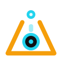
PROJECT EXODUSRTS pós-apocalíptico · simulação determinística · LAN/Tailscale
Comande os sobreviventes da Era dos Escombros. Colete, reconstrua e descubra o que as IAs deixaram dormindo — no navegador, sem instalar nada.
O jogo
Projeto solo, aberto sob MIT, construído em sprints intensos e auditado sessão a sessão — com diário de desenvolvimento aberto no repositório.
Fog of war de exploração, 365 props proceduralmente instanciados com seed fixa e veios que se esgotam em 4 estágios visuais sob os olhos de quem os trabalha.
Tick fixo de 50 ms, RNG semeável e A* próprio: mesma seed com os mesmos comandos produz exatamente o mesmo resultado — provado por teste automatizado.
Partidas LAN/Tailscale com servidor autoritativo local. Sem cloud, sem matchmaking, sem telemetria — os seus dados não saem da sua rede.
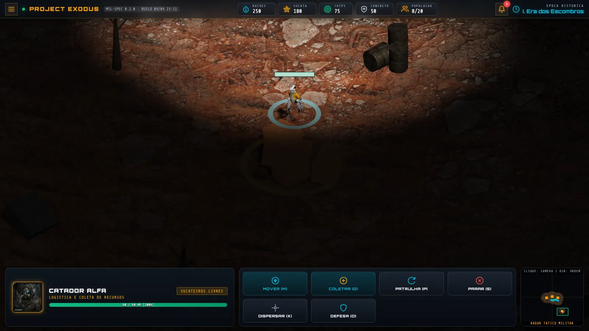
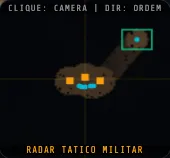
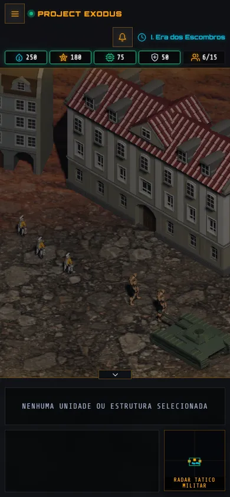
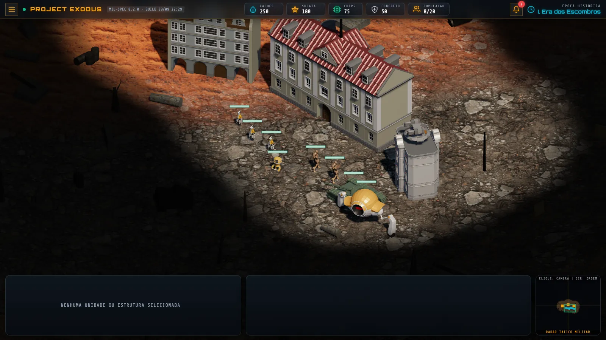
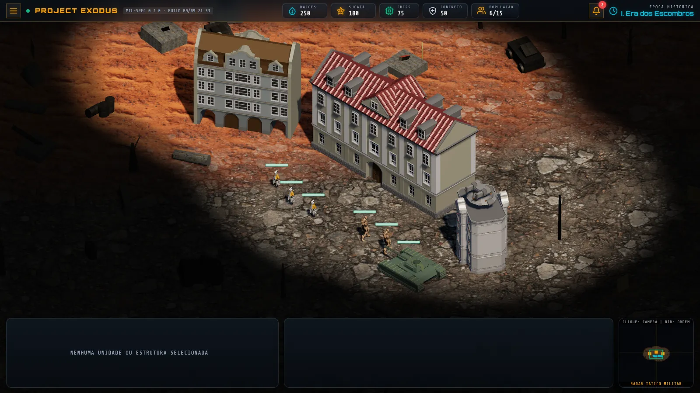
Echo-7 · Ano 47 P.C.
Cada era abre com uma crônica de rádio narrada em PT-BR. Ligue o receptor.
"[CHIADO INTENSO]… Aqui é o posto Echo-7… Encontramos algo. Não são apenas ruínas… há energia residual. Repito, *energia*."
As quatro eras
A humanidade reconstrói o mundo um fragmento de cada vez — e cada era tem uma voz.
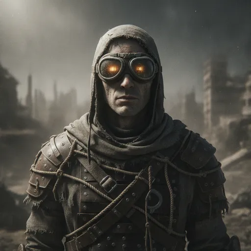
Era I
Engenharia de sucata eletro-mecânica: reaproveitar, religar e sobreviver sob a poeira.
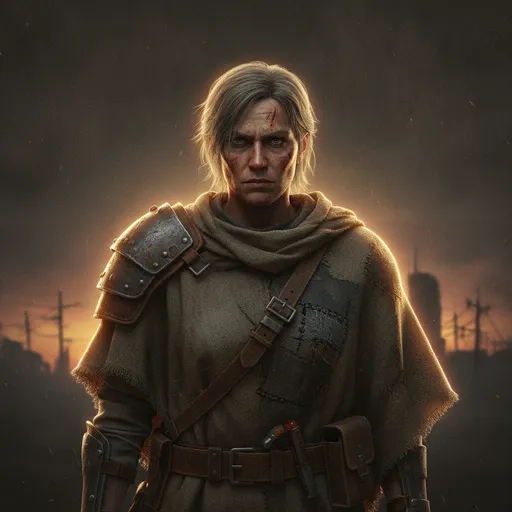
Era II
Cidades-cemitério descobertas, circuitos mortos reativados com esforço e cautela.
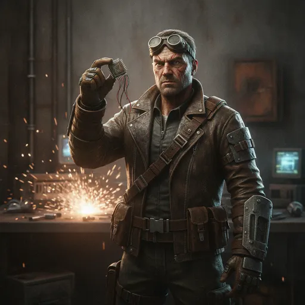
Era III
Bunkers arqueológicos: a chave do futuro está em decifrar o passado, não em inventá-lo.
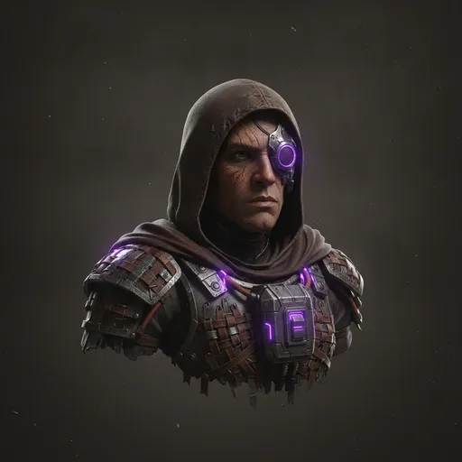
Era IV
Tumbas digitais e servidores dormentes… que podem acordar. O risco constante dos ecos do inimigo.
Assimetria
Facções com identidade, unidades exclusivas e visão de mundo própria — a assimetria chega à mesa na Fase 5.
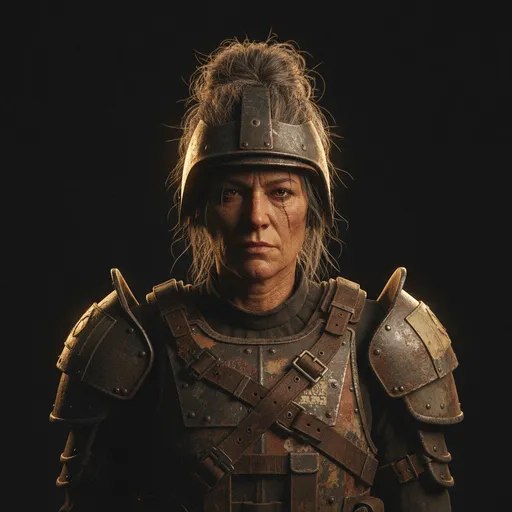
Sucateiros Livres
Nômades que transformam ruína em recurso. Rápidos, adaptáveis, sem paciência para liturgia.
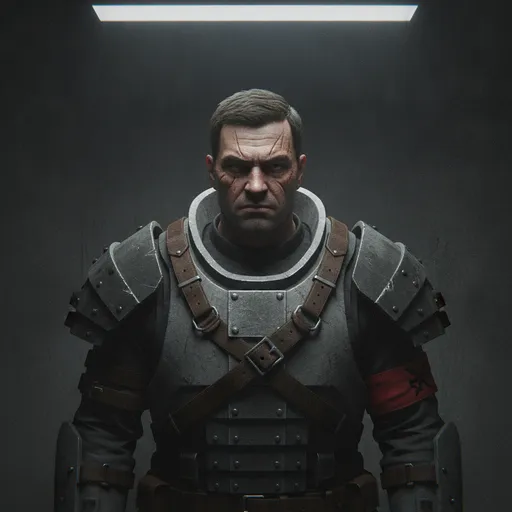
Ordem dos Bunkers
Custódios das câmaras seladas. Defesa inabalável, disciplina de ferro e memória do que não deve despertar.
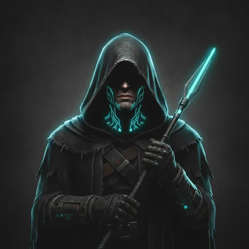
Filhos do Silício
Cultuadores dos ecos: não temem as máquinas adormecidas — querem ouvi-las. Tecnologia é revelação.
Rota
Status honesto, atualizado a cada sessão de desenvolvimento no próprio repositório.
Contribuir
O projeto é MIT. Issues, PRs e ideias são bem-vindos — com gates de teste obrigatórios e documentação viva. Leia o CONTRIBUTING e entre na reconstrução.